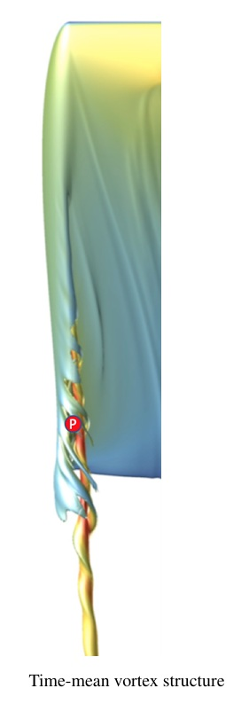
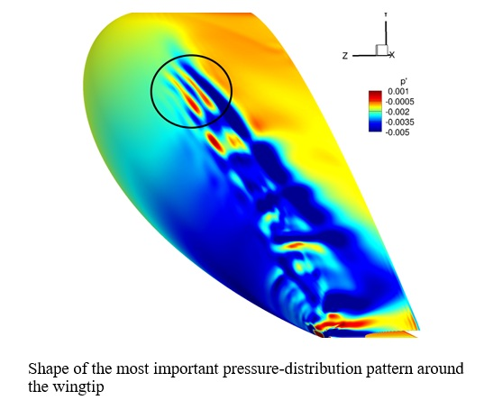
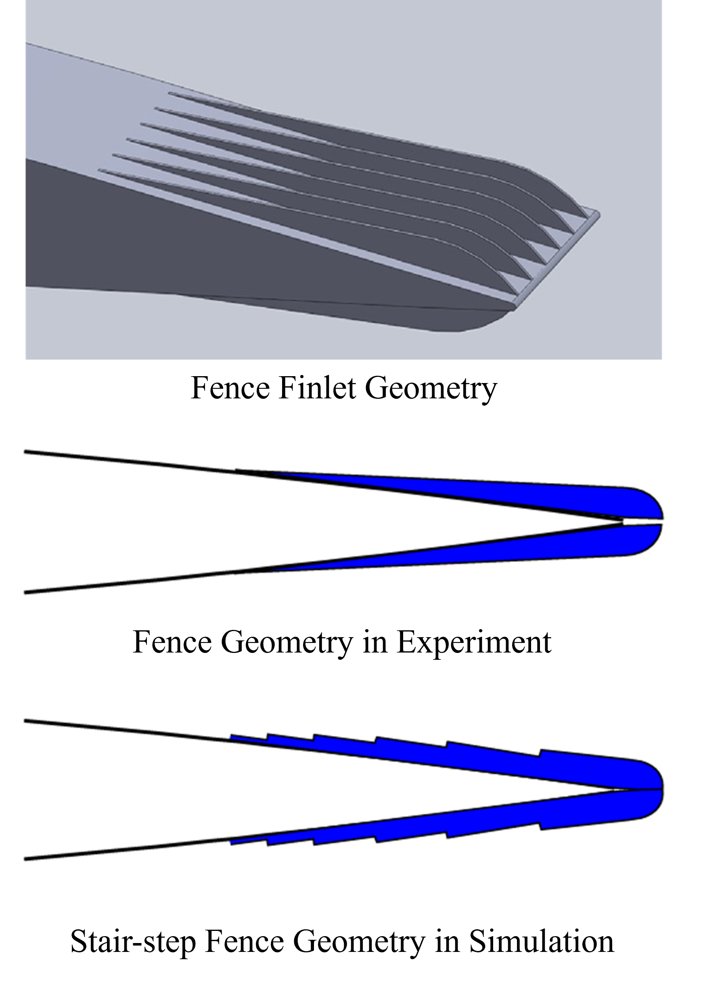
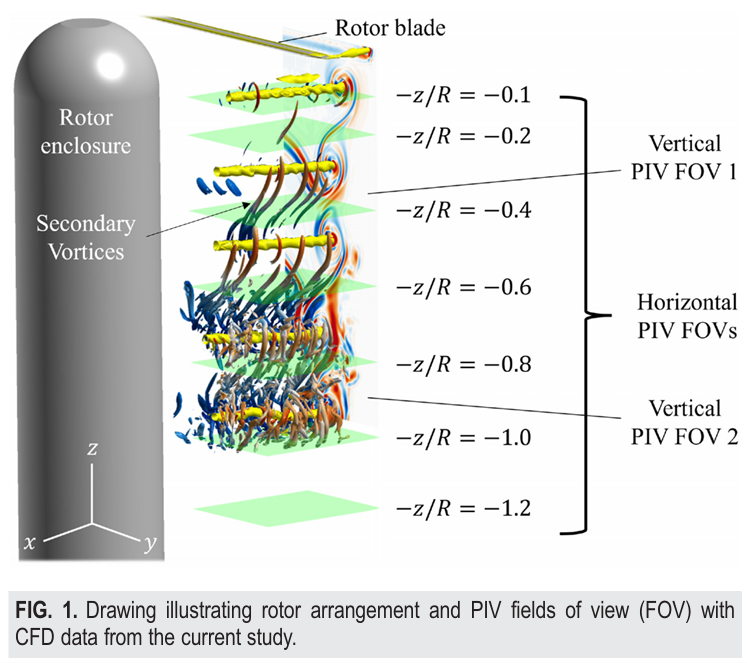
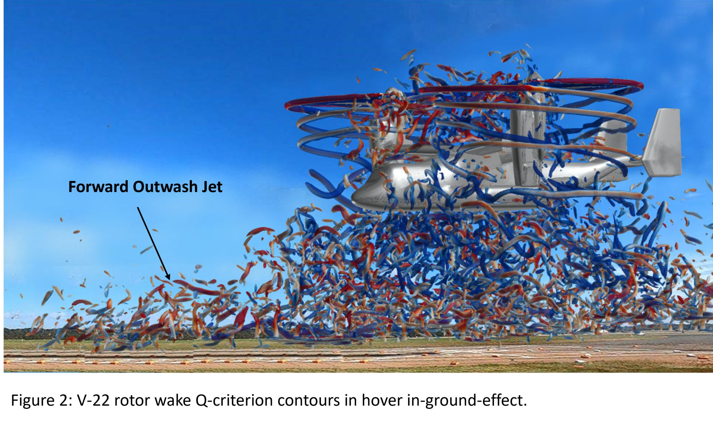
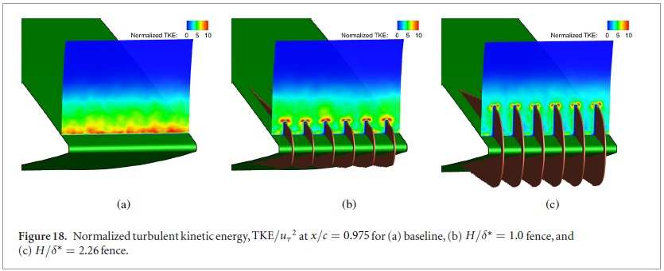
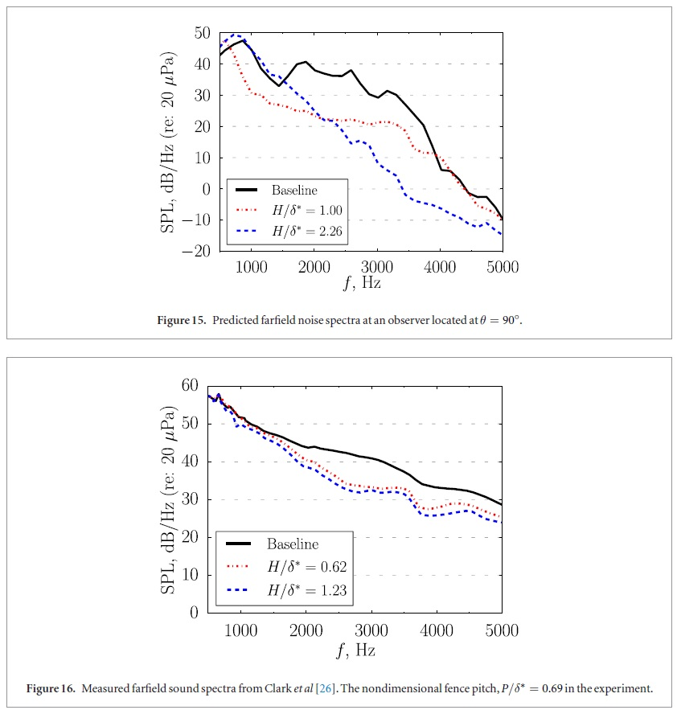
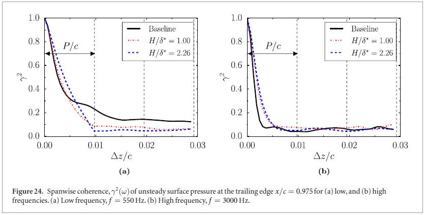

Performance-Portable Overset Near-Body Solver (CREATE-AV Helios)
Architect & lead developer of a performance-portable structured
curvilinear compressible flow solver (G3D) built on Mint/RAJA/Kokkos
and integrated as a GPU-accelerated near-body component in
CREATE-AV Helios. The solver supports high-order MUSCL and WENO
reconstructions, SA-RANS turbulence modeling, and implicit DADI
time-stepping on single-source CPU/GPU binaries, enabling runtime
selection of the execution device while using exactly the same code
path.
The core methodology was verified and validated on canonical test
cases—including transonic inviscid flow over NACA0012, steady and
unsteady viscous flow over cylinders, turbulent NACA0012, and a
18M-cell ONERA M6 wing—showing close agreement with experiments
and legacy codes such as GARFIELD, OVERFLOW, and RAPIDUS, while
delivering a 37× speedup on a single A100 GPU versus a 64-thread
CPU socket and about 1.6× faster time-to-converged-drag than the
current GPU-enabled OVERFLOW implementation for ONERA M6.
Building on this foundation, the solver has since been extended
from single-block to overset multi-block capability and wired into
Helios’s Pundit overset infrastructure. This allows the same
performance-portable solver to march overset near-body rotorcraft
grids on GPUs inside Helios, while the off-body Cartesian solver
and other participants reuse the existing Helios coupling
mechanisms with minimal changes to user workflows.
- CFD
- GPU
- C++ / Fortran
- Pybind11
Presentation Video →
Link to conference publication →
GPU-Accelerated OVERFLOW Integration in Helios
Designed and implemented a GPU-native integration of OVERFLOW into the
CREATE-AV Helios framework, which couples independent near-body solvers
to an off-body solver through its Pundit module for automated grid
motion, hole-cutting, and overset connectivity. The integration exposes
OVERFLOW as a GPU-accelerated library that Helios can call directly via
a C++/Pybind11 interface, rather than as a standalone code driven by
external scripts.
The interface builds a structured “bag” of near-body data that both
Pundit and the GPU-enabled OVERFLOW routines consume, including grid
sizes, body and boundary tags, host and device coordinate arrays,
solution variables, iblanking, connectivity, and per-partition
gpu_data dictionaries in the exact layout Pundit expects.
Pundit and OVERFLOW then operate directly on these
device pointers, so overset interpolation, boundary-condition updates,
and time marching all run on the same GPU-resident arrays while Helios
handles configuration and orchestration from Python. This removes a large
amount of manual, script-driven glue and turns OVERFLOW into a reusable
GPU near-body component that can be dropped into different Helios
workflows with minimal user effort.
- CFD
- GPU
- OVERFLOW
- Pybind11
Automated OVERFLOW Mesh & Input Generation
Fully automated overset grid generation workflow for rotor blades in Helios + OVERFLOW.
Built an end-to-end automation pipeline in Helios that sets up OVERFLOW
near-body inputs for rotor blades, including surface and volume grids
for the blade, root, and cap, as well as force-integration and solver
input files. The user either supplies a structured blade surface mesh
or simply specifies blade definitions (chord, twist, anhedral, sweep
distributions), in which case the code generates the blade surface mesh
automatically. Using NASA Chimera Grid Tools under the hood, the script
sweeps through parameter combinations until it detects high-quality overset
cap/root surface meshes and then repeats the process to obtain a high-quality blade/root/cap volume grid. Once the grid is accepted, the
pipeline writes out all OVERFLOW force-integration and solver input
files ready for Helios. A process that previously required an expert
doing hours of manual trial-and-error can now be run by a novice with a
single input file; this workflow has been used to generate volume grids
for 13 different rotor blade geometries (7AD, CH53-K, TRAM, XC142,
SpinBlades Black Belt 685, ADM swept, RAH-66, UH60 variants, BERPA,
CH53-TR) using the same configuration.
- Automation
- Helios
- OVERFLOW
Mean-Flow Perturbation Stability Analysis in FDL3DI
Implemented the Mean-Flow Perturbation (MFP) linear-stability framework inside the LES code FDL3DI to analyze how complex 3-D flows respond to small disturbances.
The work focused on an aspect-ratio-four, NACA0012 wingtip at Re = 2 × 10^5 and 12° incidence, where strong tip vortices drive induced drag. By embedding MFP directly into the flow
solver, we were able to efficiently extract least-stable mode shapes and frequencies in the tip-vortex system, including a dominant mode near the trailing edge and a second region
near incipient vortex separation. These results provide practical guidance for future flow-control actuators (e.g., winglets or periodic forcing) by informing where to place them
and which frequencies and spatial wavelengths are most effective.
- FDL3DI
- Stability Analysis
- MFP
Link to conference publication →


High-Fidelity LES of Stair-Step Finlet Geometries for Trailing-Edge Noise Reduction
The goal of my PhD work was to understand the trailing edge noise reduction mechanisms of bioinspired finlet designs from previous experiments
at Virginia Tech. While there have been several numerical studies investigating the noise reduction mechanisms of trailing edge serrations,
the high fidelity simulations done to model finlets in this project were the first of its kind. For this project, I pioneered wall-resolved
LES of airfoils with finlet fences inspired by owl down feathers. The fence finlets used in the experiment are flushed with the airfoil and rise
at a very shallow angle from the airfoil. Generating a structured mesh around such a geometry while maintaining a reasonable mesh quality and manageable
cell count is nearly impossible. Therefore, alternate geometry configurations were sought for which ‘practical’ meshes (i.e. meshes with manageable grid
count and cell aspect ratios, skewness, etc that do not render the numerical algorithm unstable) could be obtained. The fences were modeled as a ‘stair-step’
geometry by varying the height of the fences in discrete steps (as opposed to continuous variation in the experiment model) along the chord.
The massively parallel LES code, FDL3DI, was extended to handle 90° corners via automated stair-step edge detection and adaptive filter order, enabling accurate LES on
complex geometries. Also, the OpenMP load balancing approach was optimized for the stair-step geometry, cutting simulation wall-clock time by 55 % on a 2 K-core cluster.
A Ffowcs Williams-Hawkings solver was validated and applied to the trailing-edge noise-reduction designs. This work was published in Bioinspiration and Biomimetics and the Journal of Sound and Vibration.
- LES
- High-Order Methods
- FW-H
Link to PhD dissertation (see Appendix B & C) →

Rotor-Wake Accuracy Campaign
A common phenomenon in modern high-fidelity CFD simulations is the breakdown of the primary vortex system into secondary vortices
(see figures below). The goal of this research was to investigate the sources of error that cause discrepancies between the predicted
and measured vortex system of a two-bladed rotor. We wanted to not only identify the sources of numerical error from the discretized
Navier-Stokes equations, but also demonstrate how subtle differences between the geometry in the experiment and simulation could lead
to differences in the predicted and measured vortex system. For example, we showed that dissimilarities in the blade pitch angle among
the blades in the experiment, if not modelled in the simulations, can result not only in differences in vortex pairing but also in the
decay of the secondary vortices. This work was published in three peer-reviewed journals including Physics of Fluids.
- Rotorcraft
- Validation
- Helios / OVERFLOW
Link to journal publications →

V-22 Tiltrotor Ship-Deck Simulations
The purpose of this project was to investigate the aerodynamic interaction between a tiltrotor helicopter and a shipboard. For this project, I
worked with the Office of Naval Research to build and automate the CFD framework (Helios + scripted inputs) for the V-22 tiltrotor ship-deck simulations, validating
rotor loads/air-frame download to ~5 % of flight-test data while cutting compute cost 83 % (6 × speed-up).
Army / Navy article →
Link to conference publication →

High-Fidelity LES & Aeroacoustics of Owl-Inspired Airfoils
The goal of my PhD work was to understand the trailing edge noise reduction mechanisms of bioinspired finlet designs from previous experiments
at Virginia Tech. While there have been several numerical studies investigating the noise reduction mechanisms of trailing edge serrations,
the high fidelity simulations done to model finlets in this project were the first of its kind. For this project, I pioneered wall-resolved
LES of airfoils with finlet fences inspired by owl down feathers—demonstrating validated reductions in surface-pressure unsteadiness and
far-field noise (greater for taller fences). Farfield noise was shown to decrease due to an increase in the distance between the
turbulent kinetic energy in the boundary-layer turbulence and the trailing edge as well as a decrease in the spanwise coherence of the
turbulence. This work was published in Bioinspiration and Biomimetics and the Journal of Sound and Vibration.
- LES
- Aeroacoustics
- Research
Presentation Video →
Link to journal publications →
Link to PhD dissertation →


